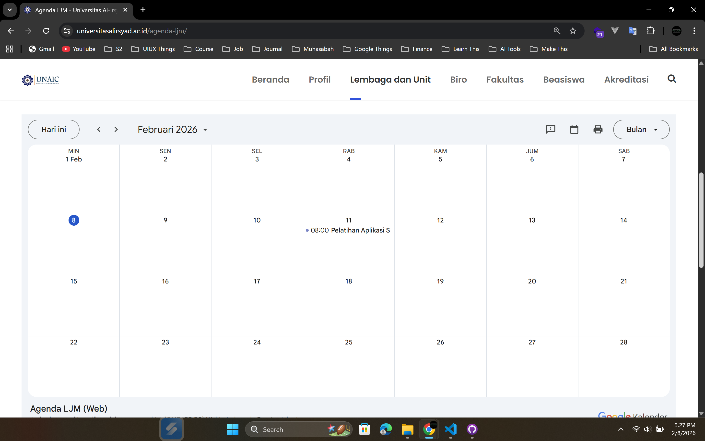
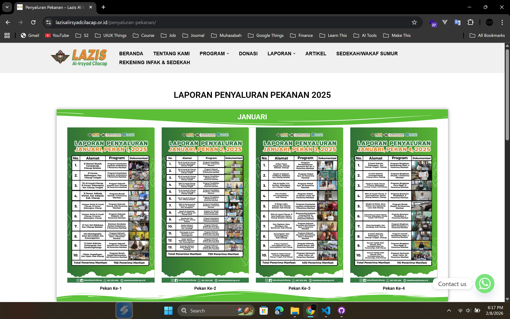
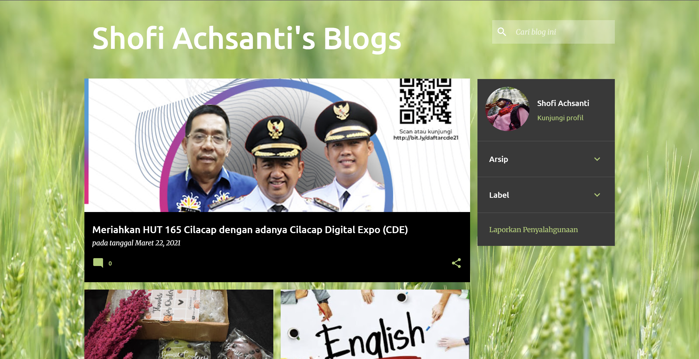

Bagian yang dibuat: Front-end web pada page yang berkaitan dengan LJM (Tentang LJM, Dokumen Mutu, Akreditasi & Audit). Tools: WordPress, Page Builder.
Bagian yang dibuat saat menjadi relawan di Lazis (Nov 24 - April 25): Beranda, Program, Laporan, Donasi, & Artikel (Kecuali jika ada perubahan lain dari admin saat ini seperti pada bagian nav yang sudah tidak rapih karena penambahan nav menu dari admin saat ini). Tools: WordPress, Elementor.
Setelah menggunakan dan mempelajari Blogger sejak Mei 2019 dan berhasil uji coba membuat web pada project 1 dan 2, akhirnya pada November 2020 saya memutuskan untuk membuat web artikel dengan nama pribadi saya. Bagian yang dibuat: Frontend (Hanya sekedar tampilan artikel dengan susunan artikel yang lebih baik). Tools: Blogspot.
